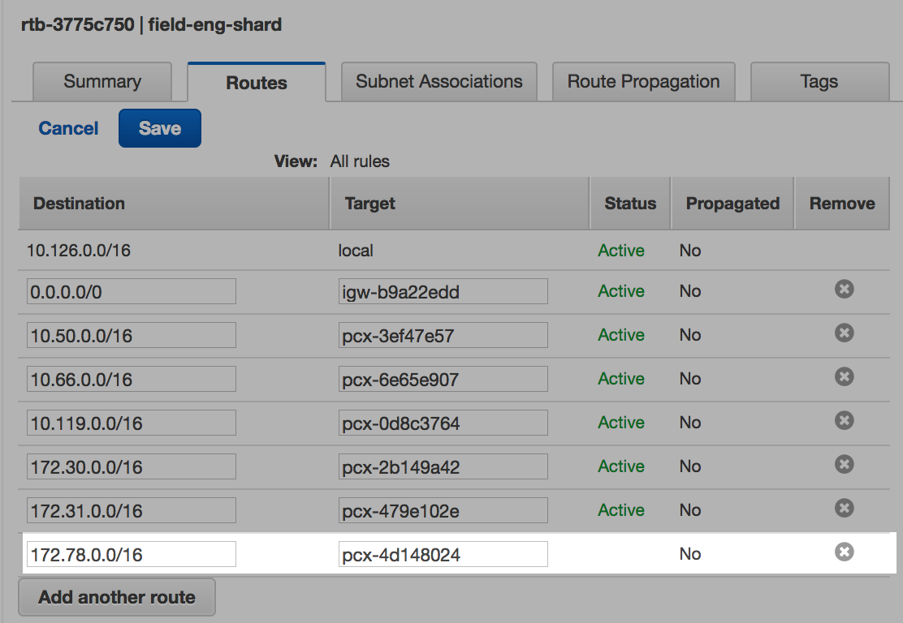

VPC peering
VPC peering allows your Databricks clusters to connect to your other AWS infrastructure (RDS, Redshift, Kafka, Cassandra, and so on) using private IP addresses within the internal AWS network.
The VPC hosting the other infrastructure must have a CIDR range distinct from the Databricks VPC and any other CIDR range included as a destination in the Databricks VPC main route table. If you have a conflict, you can contact Databricks support to inquire about moving your Databricks VPC to a new CIDR range of your choice. You can view this by searching for the Databricks VPC in your AWS Console, clicking on the main route table associated with it, and then examining the Route Tables tab. Here is an example of a main route table for a Databricks deployment that is already peered with several other VPCs:
For information on VPC peering, see the AWS VPC Peering guide.
This guide walks you through an example of peering an AWS Aurora RDS to your Databricks VPC using the AWS Console. If you prefer a programmatic solution, go to Programmatic VPC peering for a notebook that performs all of the steps for you. Finally, there is a troubleshooting section for common problems and resolutions.
Important
Consult your AWS/devops team before trying to set up VPC peering. Some familiarity with AWS as well as sufficient permissions will ensure this process goes smoothly. The notebook can help you make this transition, however depending on your environment it is important to ensure to make the necessary modifications to ensure there is no impact to the your existing infrastructure.
AWS Console example
The following diagram illustrates all of the different components that are involved in peering your Databricks deployment to your other AWS infrastructure. In the example, Databricks is deployed in one AWS account and the Aurora RDS is deployed into another. A peering connection is established to link the two VPCs across both AWS accounts.
As you move through this process within your own AWS Console, it helps to keep a table of information to refer back to. Record the following:
ID and CIDR Range of your Databricks VPC.
ID and CIDR Range of your other infrastructure (Aurora RDS).
ID of the main route table of your Databricks VPC.
AWS Service |
Name |
ID |
CIDR Range |
|---|---|---|---|
VPC |
Databricks VPC |
vpc-dbcb3fbc |
10.126.0.0/16 |
VPC |
Aurora RDS VPC |
vpc-7b52471c |
172.78.0.0/16 |
Route Table |
Databricks Main Route Table |
rtb-3775c750 |
Step 1: Create a peering connection
Navigate to the VPC Dashboard.
Select Peering Connections.
Click Create Peering Connection
Set the VPC Requester to the Databricks VPC ID.
Set the VPC Acceptor to the Aurora VPC ID.
Click Create Peering Connection.
Step 2: Record the ID of the peering connection
AWS Service |
Name |
ID |
CIDR Range |
|---|---|---|---|
VPC |
Databricks VPC |
vpc-dbcb3fbc |
10.126.0.0/16 |
VPC |
Aurora RDS VPC |
vpc-7b52471c |
172.78.0.0/16 |
Route Table |
Databricks Main Route Table |
rtb-3775c750 |
|
Peering Connection |
Databricks VPC <> Aurora VPC |
pcx-4d148024 |
Step 3: Accept the peering connection request
The VPC with the Aurora RDS will need to have its owner approve the request. The status on Peering Connections indicates Pending Acceptance until this is done.
Select Actions > Accept Request.
Step 4: Add DNS resolution to peering connection
Log into the AWS Account that hosts the Databricks VPC.
Navigate to the VPC Dashboard.
Select Peering Connections.
From the Actions menu, select Edit DNS Settings.
Click to enable DNS resolution.
Log into the AWS Account that hosts the Aurora VPC and repeat steps 2 - 4.
Step 5: Add destination to Databricks VPC main route table
Select Route Tables in the VPC Dashboard.
Search for the Databricks VPC ID.
Click the Edit button under the Routes tab.
Click Add another route.
Enter the CIDR range of the Aurora VPC for the Destination.
Enter the ID of the peering connection for the Target.

Step 6: Add destination to Aurora VPC main route table
Select Route Tables in the VPC Dashboard.
Search for the Aurora VPC ID.
Click the Edit button under the Routes tab.
Click Add another route.
Enter the CIDR range of the Databricks VPC for the Destination.
Enter the ID of the peering connection for the Target.
Step 7: Find the Databricks unmanaged security group
Select Security Groups in the VPC Dashboard.
Search for the ID of the Databricks VPC.
Find and Record the ID of the security group with Unmanaged in the name. Do not select the Managed security group.
AWS Service |
Name |
ID |
CIDR Range |
|---|---|---|---|
VPC |
Databricks VPC |
vpc-dbcb3fbc |
10.126.0.0/16 |
VPC |
Aurora RDS VPC |
vpc-7b52471c |
172.78.0.0/16 |
Route Table |
Databricks Main Route Table |
rtb-3775c750 |
|
Peering Connection |
Databricks VPC <> Aurora VPC |
pcx-4d148024 |
|
Security Group |
Databricks Unmanaged Group |
sg-96016bef |
Step 8: Add rule to unmanaged security group
Select Security Groups in the VPC Dashboard.
Search for the ID of the Aurora VPC.
Add an Inbound Rule by clicking Edit and then Add Another Rule.
Select Custom TCP Rule or the service that relates to your RDS.
Set the Port Range to correspond to your RDS service. The default for Aurora [MySQL] is 3306.
Set the Source to be the security group ID of the Unmanaged Databricks security group.
Programmatic VPC peering
This notebook supports two scenarios:
Establishing VPC peering between Databricks VPC and another VPC in the same AWS account
Establishing VPC peering between Databricks VPC and another VPC in a different AWS account
Troubleshooting
Can’t establish connectivity with netcat
If you can’t establish connectivity with netcat, check that the hostname is resolving via DNS by using the host Linux command. If the hostname does not resolve, verify that you have enabled DNS resolution in your peering connection.
%sh host -t a <hostname>
Can’t establish connectivity with the hostname or the IP address
If you aren’t able to establish connectivity with either the hostname or the IP address, verify that the VPC of your Aurora RDS has 3 subnets associated with its main route table.
Select Subnets from the VPC Dashboard and search for the ID of the Aurora VPC. There should be a subnet for each availability zone.
Make sure that each of those subnets are associated with the main route table.
Select Route Tables from the VPC Dashboard and search for the main route table associated with the Aurora RDS.
Click the Subnet Associations tab and then Edit. You should see all 3 subnets in the list, but none of them should have Associate selected.
DNS is not working
Check in Route 53 and confirm that the Databricks VPC is associated with the private hosted zones used within your VPC.